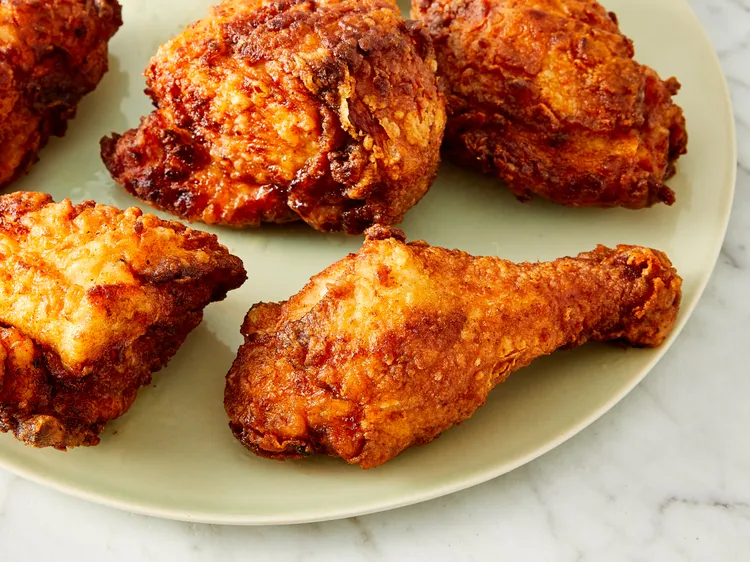

Fried Chicken

This fried chicken recipe combines multiple tricks to ensure the juciest, falvorful, and crispiest chicken every time.This recipe takes 1 hr 20 minutes to make, however it is worth the wait time.
Ingredients
- 4 lbs of chicken
- 1 cup buttermilk
- 2 cups all-purpose flour
- 1 teaspoon paprika
- Salt (to preference)
- Black Pepper (to preference)
- 2 quarts vegetable oil
Instructions
- Skin cut up chicken pieces if you prefer.
- Place flour in a large plastic bag (let the amount of chicken you are cooking dictate the amount of flour you use). Season flour with paprika (which helps to brown the chicken), salt, and black pepper.
- Dip chicken pieces in buttermilk, then transfer, a few at a time, to the bag with flour; seal the bag and shake until well coated. Repeat with remaining chicken.
- Place coated chicken on a baking sheet or tray; cover with a clean dish towel or waxed paper. Let sit until the flour is a paste-like consistency. This is crucial!
- Fill a large skillet (cast iron is best) about ⅓ to ½ full with vegetable oil. Heat until VERY hot.
- Carefully lower as many chicken pieces into the skillet as it can hold. Fry in hot oil on both sides until brown.
- When browned, reduce heat and cover skillet; cook for 30 minutes (the chicken will be cooked through but not crispy). Remove cover, raise heat again, and continue frying until crispy.
- Drain fried chicken on paper towels. Depending on how much chicken you have, you may have to fry in a few batches. Keep the finished chicken in a slightly warm oven while frying the rest.
Back to Meals